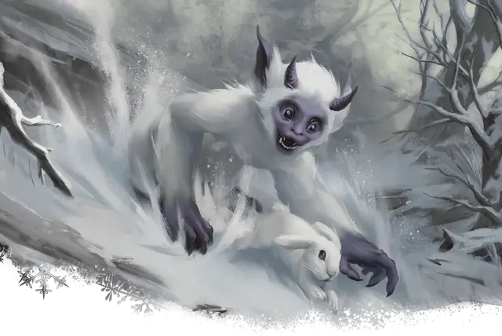

Малыш йети
Yeti Tyke
Маленький Монстр, хаотично-злой

Класс Доспеха 11 (природный доспех)
Хиты 9 (2к6 + 2)
Скорость 20 футов, лазая 20 футов
| мод | спас | ||
|---|---|---|---|
| СИЛ | 10 | +0 | +0 |
| ЛОВ | 11 | +0 | +0 |
| ТЕЛ | 12 | +1 | +1 |
| мод | спас | ||
|---|---|---|---|
| ИНТ | 6 | −2 | −2 |
| МДР | 8 | −1 | −1 |
| ХАР | 5 | −3 | −3 |
Навыки Восприятие +3, Скрытность +3
Иммунитет к урону холод
Чувства тёмное зрение 60 футов, пассивное Восприятие 9
Языки Понимает язык Йети, но не говорит.
Опасность 1/8 (25 опыта)
Бонус мастерства +2
Особенности
Тонкий нюх. Малыш йети совершает с преимуществом проверки Мудрости (Восприятие), полагающиеся на обоняние.
Снежный камуфляж. Малыш йети совершает с преимуществом проверки Ловкости (Скрытность), когда пытается спрятаться на снежной местности.
Действия
Коготь. Рукопашная атака оружием: +2 к попаданию, досягаемость 5 футов, одна цель. Попадание: Рубящий урон 2 (1к4) плюс урон холодом 2 (1к4).
Описание
Йети и отвратительный йети представлены в «Бестиарии». В этом разделе представлена информация об малышах йети, редко встречающихся в природе. Взрослые йети очень заботятся о своих детенышах, скрывая их от остального мира. Возраст малышей йети находится между 1 и 7 годами.
Малыши йети такие же злобные создания, как и их родители, их опасность нивелируется только их размером. При среднем росте в 3 фута они любят нападать на существ такого же роста и меньше, но их легко отпугивают более сильные и крупные существа. Запуганного малыша йети можно контролировать какое-то время, но вырастить из него что-либо отличное от дикого и кровожадного хищника невероятно сложно (хотя и возможно).
См. дополнительно статью: "Бестиарий: Йети"